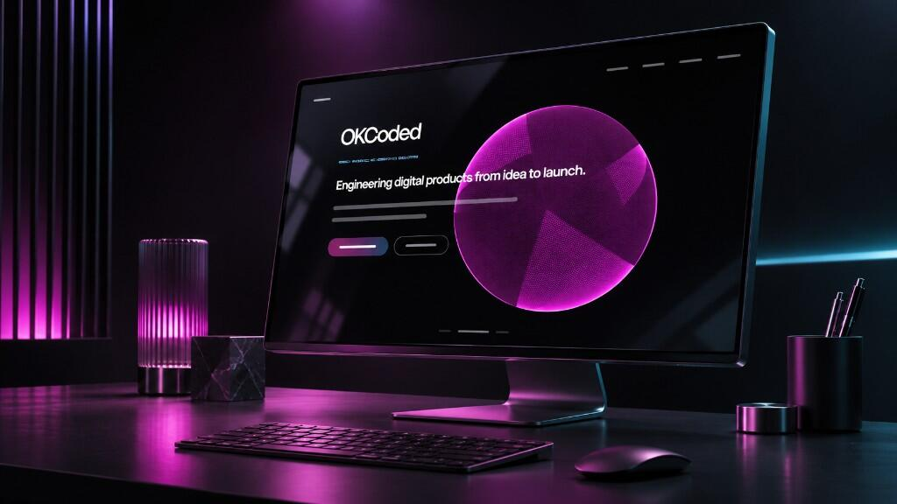
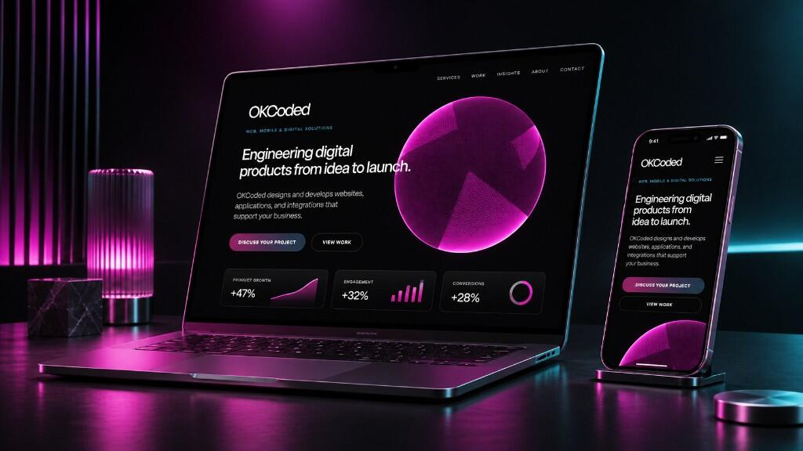

Business websites and landing pages
A site for the service you sell, with the pages, forms, and next step a visitor should take. Built around the offer, rather than a theme with the logo swapped.
I design and build websites and web applications around how a business actually operates. The useful version is specific: pages people can use, pages that load quickly, and code another developer can maintain after the launch.
I'm based in Hollywood, Florida, and I work with businesses in Fort Lauderdale and across South Florida.

A lot of projects start as a website and become the thing the business runs day to day: the pages, a way to take a booking or a payment, and a connection to tools that already exist.
A site for the service you sell, with the pages, forms, and next step a visitor should take. Built around the offer, rather than a theme with the logo swapped.
New builds and existing WordPress sites. Theme and editing work your team can live with, including a cleanup when the current theme has become hard to change.
When a set of marketing pages is no longer enough: accounts, internal tools, and connections to the systems the business already depends on.
Scheduling, checkout, and the follow-through — the email, the calendar, the record in another system — so that work leaves the spreadsheet.
A new interface for a site people already use. Content, redirects, and tracking come with it, so launch doesn't throw away the URLs and history that were working.
The sequence stays the same whether the job is a business site or something with accounts and payments. The scope is what changes.
I start with the problem, what already exists, and what the first version has to do. That gets written down before I design screens.
Structure, content, and the technical approach — including whether WordPress, a custom application, or a mix is the right fit.
I build the site and connect the parts that have to work together: content, forms, scheduling, payments, and analytics.
Checks across screen sizes and with a keyboard, plus the tracking you'll look at after launch. Then the fixes that show up once real visitors arrive.
The project I can walk through in public is Reviver. It is the published case study, and the clearest example of a site that had to do more than explain a product. If you need a business site or a WordPress build, tell me about it below and I can walk through a relevant example.

Headless commerce · Shopify · existing accounts
The problem was one customer experience that had to explain the RPLATE, sell it through Shopify, and still recognize people who already had accounts on Reviver's platform. The storefront connects those systems, including who can buy in a given state and the redirects that kept older URLs working.
These are part of the build, in the same pass as the features. They are how the site holds up after it launches.
Layouts are built for phones and checked on larger screens. Type, navigation, and forms stay usable without pinching or sideways scrolling.
A real heading structure, a canonical URL, and content a crawler can read. Being findable still depends on the page being worth finding.
Form fields have labels, focus is visible, and headings stay in order. I check the important paths with a keyboard.
Images are sized for the layout and served in a modern format when that file is smaller. A page doesn't get a framework it doesn't need.
GA4 and event tracking on the actions that matter, such as starting an inquiry, so you can see what people do after they land.

A brochure site and a web application are different jobs. I don't publish a flat price, because the number depends on the pages, the content, and whether the site has to talk to booking, payment, or other systems you already use. After a short look at what you need, I'll give you a range before any build starts. If you already have a budget, say so. I'd rather tell you whether it fits.
A focused business site is often a few weeks once the scope is settled and the content is available, or we have a plan for structuring it. Redesigns, migrations, and anything with scheduling or payments take longer, because the risky part is the integration, not the layout. I'll put a timeline next to the scope before development starts.
Yes. I take on existing WordPress sites: a theme that's hard to edit, plugins that fight each other, or a redesign that has to keep the content and the URLs. I also build new WordPress sites when that's the easier tool for the people who will update them. If the project is really an application, I'll say so instead of forcing it into a theme.
Yes. That includes booking tools, Stripe or a similar payment provider, and the step that should follow — a confirmation, a calendar event, or a record in the system you already use. On a larger build I connected a storefront to Shopify checkout and to customer accounts that already existed. The useful starting point is which tools you use today, and what should happen after someone books or pays.
Yes. After launch I can stay on for fixes, small features, and the changes that show up once customers use the site. Support is scoped on its own, so it doesn't turn into an open-ended rewrite.
A few sentences is enough. I'll reply with what I think the project actually is, and whether I'm the right person to build it.
Prefer email? hello@okcd.io